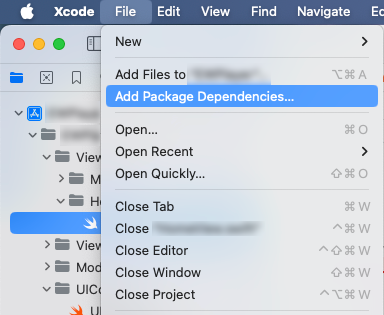
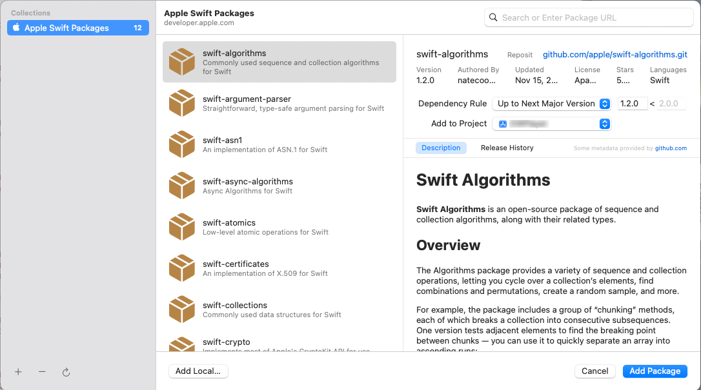
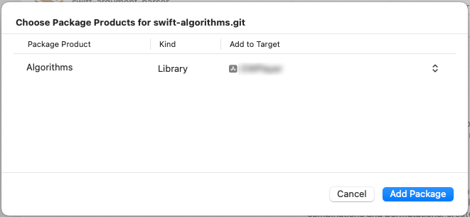

Swift Algorithms
Created at : 2024/08/14
SwiftUIのForEachで.indexed()を使用したかったので導入してみました
環境
作業した時点でのツールなどのバージョン
- M2 MacBook Pro 2022
- macOS Sonoma 14.3.1（23D60）
- Xcode 15.4 (15F31d)
参考情報
- Apple Developer : Swift AlgorithmsパッケージとSwift Collectionsパッケージについて
- GitHub : swift-algorithms
Swift Package Managerで導入する
File > Add Package Dependencies を選択する

swift-algorithms を選択する
Add to Projectには導入したいプロジェクトを選択しておく
ダイアログが表示されたらAdd Packageを押下する

.indexed() を使ったサンプルコード
ContentView.swif
import SwiftUI
import Algorithms
private struct Song: Hashable {
let image: String?
let name: String?
let artist: String?
}
struct ContentView: View {
var body: some View {
let playlists: [Song] = [
.init(image: "artwork001", name: "playlist1", artist: "artist A"),
.init(image: "artwork002", name: "playlist2", artist: "artist B"),
.init(image: "artwork003", name: "playlist3", artist: "artist C")
]
VStack {
ForEach(playlists.indexed(), id: \.element) { index, item in
if let imageName = item.image,
let name = item.name,
let artist = item.artist {
// if let した変数を使用した何らかの処理を書く
}
}
}
.padding()
}
}